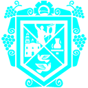

<mat-toolbar class="p-0 mat-elevation-z1">
    <div fxFill fxFlex fxLayout="row" fxLayoutAlign="start center">
        <div fxFlex="1 0 auto" fxLayout="row" fxLayoutAlign="start center">
            <button (click)="toggleSidebarOpen('navbar')" *ngIf="!hiddenNavbar && !rightNavbar"
                    class="navbar-toggle-button" fxHide.gt-md mat-icon-button>
                <mat-icon class="secondary-text">menu</mat-icon>
            </button>
            <div *ngIf="!hiddenNavbar && !rightNavbar" class="toolbar-separator" fxHide.gt-md></div>
            <div *ngIf="horizontalNavbar" fxLayout="row" fxLayoutAlign="start center">
                <div class="logo ml-16">
                    
                </div>
            </div>
            <div class="px-8 px-md-16">
                <fuse-shortcuts [navigation]="navigation"></fuse-shortcuts>
            </div>
        </div>

        <div class="" fxFlex="0 1 auto" fxLayout="row" fxLayoutAlign="start center">
            <div class="toolbar-separator"></div>
            <button [matMenuTriggerFor]="userMenu" class="user-button" mat-button>
                
                <span class="username mr-12" fxHide fxShow.gt-sm>{{sesionUsuario.usuario}}</span>
                <mat-icon class="s-16" fxHide.xs>keyboard_arrow_down</mat-icon>
            </button>
            <mat-menu #userMenu="matMenu" [overlapTrigger]="false">
                <button [routerLink]="['/sistema-comercial/usuarios/perfil']" mat-menu-item type="button">
                    <mat-icon>account_circle</mat-icon>
                    <span>Mi perfil</span>
                </button>
                <button (click)="logout()" mat-menu-item>
                    <mat-icon>exit_to_app</mat-icon>
                    <span>Salir</span>
                </button>
            </mat-menu>

            <div class="toolbar-separator" fxHide fxShow.gt-xs></div>
            <button (click)="toggleSidebarOpen('quickPanel')" aria-label="Toggle quick panel" class="quick-panel-toggle-button" mat-icon-button>
                <ng-container *ngIf="(_notificacionState.state$ | async) as notificacion">
                    <mat-icon class="secondary-text" [matBadge]="notificacion.length" matBadgeSize="small" matBadgeColor="primary"
                              [ngClass]="{'lime-fg': notificacion.length !== 0}" [matBadgeHidden]="notificacion.length === 0">notifications_active
                    </mat-icon>
                </ng-container>
            </button>
        </div>
    </div>
</mat-toolbar>
